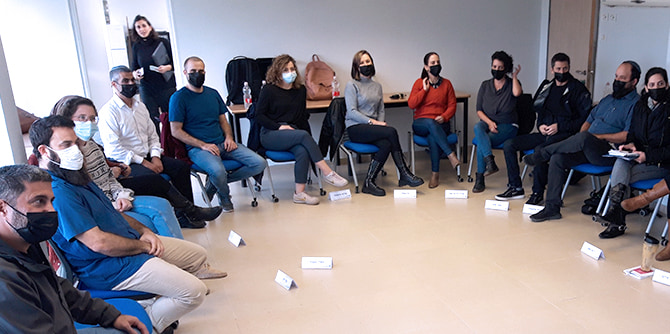

אחד המאפיינים הייחודיים של הצפון הוא החברה המגוונת שבו. מנהיגות במרחב גאוגרפי המורכב מקהילות בעלות מאפיינים, נרטיבים ומושגי "טוב" ו"צדק" שונים ולעתים אף סותרים, מצריכה פיתוח יכולות נוספות, נוסף על לימודי המנהיגות ה"קלאסיים" שאנו מכירים. אנו רואים צורך להאיר תחומי עיוורון של מנהיגים לקבוצות אוכלוסייה אחרות מהם ולהכיר בתפיסות המציאות השונות והמגוונות, שתוצאותיהן ניכרות במרחב הצפוני.
לפיכך, באמצע נובמבר יצאה לדרך "המעבדה למנהיגות בחברה מגוונת", כחלק מהלימודים בתוכנית מנדל למנהיגות חברתית בצפון. מפגשי הקבוצה, בימי רביעי, מוקדשים ללמידת תכנים שמטרתם להכשיר ולפתח מנהיגות בעלת מכוונות ויכולת להוביל מהלכים משני מציאות במרחב הצפוני.
המפגשים מורכבים מהרצאה בת שעה השוזרת את הסיפור האישי של המרצה עם הנרטיב הקולקטיבי של העדה או הקהילה שאליה הוא או היא משתייכים. כמו כן, העמיתים נחשפים למושגים מרכזיים הקשורים בדיאלוג בין-תרבותי, כגון "הנחת הזהות המשותפת", "שיח זהות" לעומת "שיח הישגים", "הנחות סמויות במפגש עם האחר", ועוד. במהלך יום הלימוד עוסקים חברי הקבוצה בלימודי רוח המהווים את הבסיס לשאלות שביסוד קיומנו המשותף כאן, נחשפים לנרטיבים של הקהילות השונות בצפון, ומתרגלים מתודות לדיאלוג בין קבוצות ובין תרבויות, מזווית ראייה הבאה להשפיע על המציאות.
תוכני היום אמורים להקרין על כלל השיחה והלמידה במהלך השנה בתוכנית החברתית, ובהמשך להשפיע על תוכני הלמידה בשאר התוכניות.
את פיתוח הנושא מובילה
אפרת שרשבסקי, חברת צוות מרכז מנדל למנהיגות בצפון, בסיוע מומחים בעלי ידע וניסיון בנושא:
ד"ר גלי סמבירא,
פרופ' ערן הלפרין,
פרופ' אמל גמאל,
ד"ר אברהם ליפשיץ,
ד"ר שמעון אזולאי,
ד"ר קטף מורד ומירית חייבי-ברק, ולצדם אנשי ונשות סגל מרכז מנדל למנהיגות בצפון.
{kind=link}